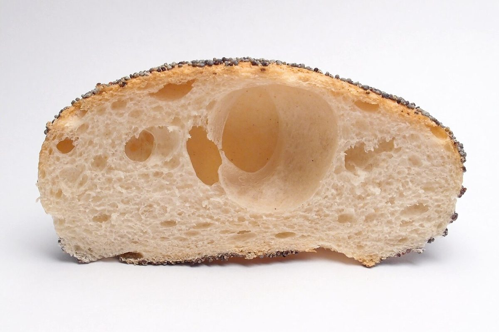

パン屋 / 長崎県西彼杵郡時津町
ブーランジェリーコナ
パン屋「ブーランジェリーコナ」のご案内ページです。営業時間やメニューなど、詳しいことは準備中。まずはInstagramをのぞいてみてください。
制作側の連想
スタンド式の姿見の部位を、図にしてみる
このサイトでは、立てて使う「姿見」の部位を並べて遊んでみました。鏡面、フレーム、背面スタンド、ゴム足、留め具。ページの名前の横にも、部位の名前をそっと添えています。制作側の連想で、お店の理念・由来とは無関係です。
部位の配置図
六つの部位(鏡の背中側も)
- 鏡面姿を映す、ガラス面の部分です。縁は枠に守られています。
- フレーム鏡面を囲んで支える枠です。木や金属などで作られます。
- 背面スタンド背中側に開く脚です。鏡を立てかけた角度に保ちます。
- コーナーカバー枠の四隅を覆う部品です。角をぶつけたときの傷みをやわらげます。
- ゴム足床に触れる部分につける、すべり止めのゴムです。
- 転倒防止の留め具鏡が倒れないよう、壁などと結んでおくための金具です。
図は制作側が描いた模式図です。お店の設備や提供内容を示すものではありません。
ギャラリー(イメージ)
白と黒の背景で。




写真はパンとコーヒー豆のイメージです。お店のものではありません。
ご案内
お店のこと(確認できたものだけ)
| 所在地 | 〒851-2101 長崎県西彼杵郡時津町西時津郷203-11 |
|---|---|
| 電話 | 095-801-7283 |
| 営業時間 | 準備中 |
| 定休日 | 準備中 |
| ご予約 | 準備中 |
| 駐車場 | 準備中 |
| SNS | Instagram @boulangeriekona |